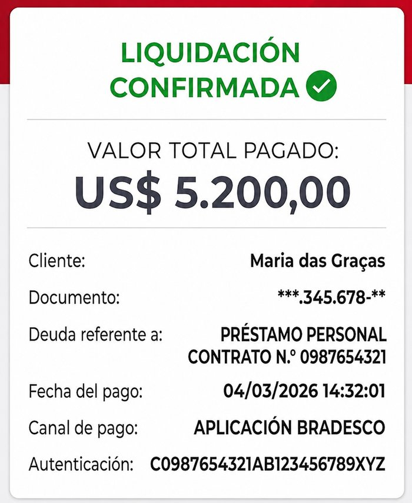
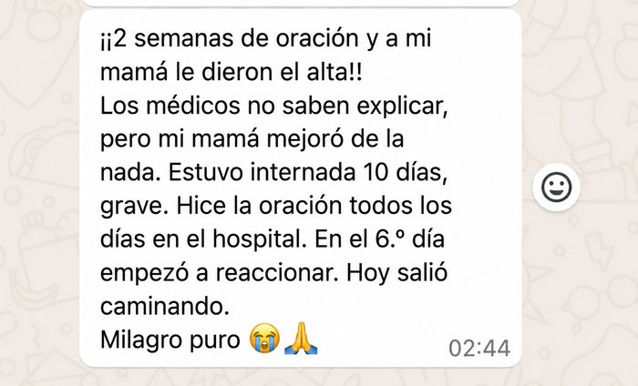

Existe una oración poderosa que va a desbloquear aquello que vienes pidiendo en silencio.
Antes de escuchar, responde con sinceridad. Tus respuestas ayudan a revelar qué área de tu vida necesita más esta bendición hoy.
No llegaste aquí por casualidad. Continúa y mira por qué este mensaje apareció para ti hoy.
Antes de continuar, ¿cómo te llamas?
¿En qué área sientes que tu vida está más bloqueada?
¿Y qué es lo que más ha angustiado tu corazón?
No llegaste hasta aquí por casualidad.
Existe una bendición lista para ser liberada en tu vida.
El Señor escuchó tu llanto, vio tu lucha y sabe exactamente lo que falta para que el milagro suceda.
No te rindas ahora. Algo muy importante está llegando, una oportunidad enviada por Dios para cambiar tu destino.
Mira lo que ocurrió con personas que decidieron creer y seguir hasta el final.
Mira algunos testimonios que nos llegaron

Esta oración no es solo sobre temas financieros. Mira también otros testimonios que recibimos.

Muchas personas también dudaron al principio...
Pero después de escuchar la oración, entendieron que no era una oración común y decidieron compartir lo que vivieron.
Mira con atención. Esto es lo que muchas personas sintieron antes de llegar a la parte más importante.
Estamos preparando algo especial para ti...
Con base en tus respuestas
Ahora escucha con atención: este mensaje es para ti
Mira el video hasta el final para recibir la orientación completa.